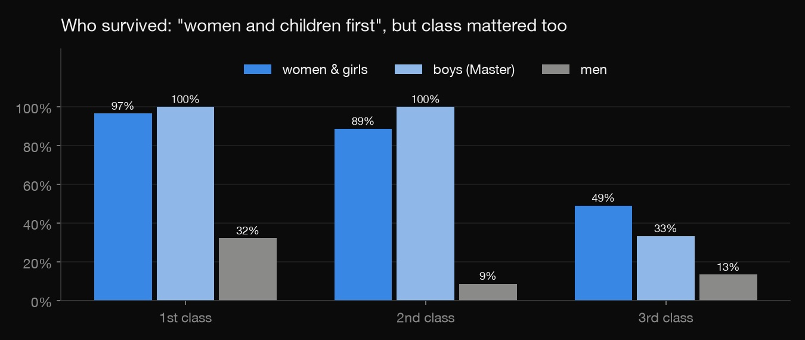
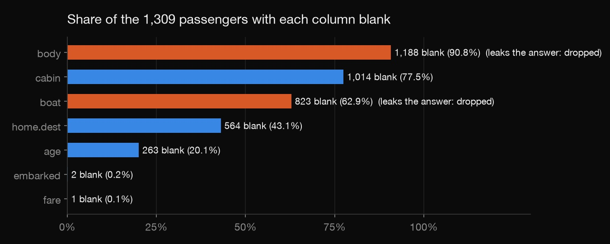
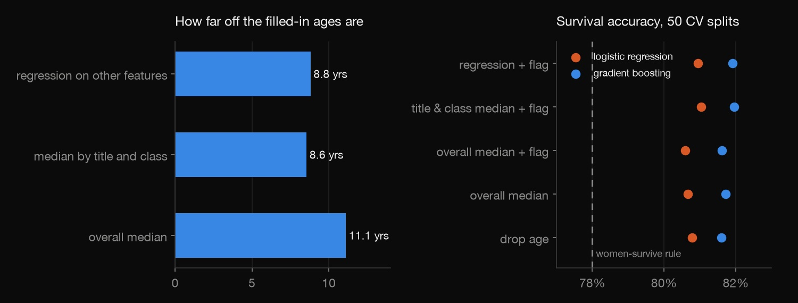

Python · Machine learning · 2026-10
Titanic: The Missing-Data Problem
The classic Titanic survival project, focused on what every real dataset has: missing values and columns that secretly contain the answer.

Uses the full public passenger list (1,309 people) instead of Kaggle's split, so every passenger is scored by cross-validation. About 82% is an honest score for this data.
01 — The problem
A fifth of the Titanic's passengers have no recorded age, and three-quarters have no cabin. Every real analysis hits gaps like these, and the usual advice is "fill them with the median". Does it matter how you fill them in? Could the gaps themselves tell you something? And which columns would quietly hand a model the answer?
02 — What I built
A Python project on the full passenger list:
- A leak hunt: two columns that give away who survived are found and removed.
- An imputation test: hide ages we know, fill them back in four ways, and measure the error.
- A fair comparison: six ways of handling missing age × two models, over 50 identical train/test splits, against the simple rule "women survive, men don't".
- A check that the imputation never looks at the test passengers.
03 — How it was built
- 01
Find the columns that are the answer
The full list includes
boat(the lifeboat a passenger left in) andbody(the number given to a recovered body). 98.1% of people with a boat number survived; 0% with a body number did. A model fed either looks brilliant and is useless. Both are dropped, andcheck.pyfails if they come back.
- 02
Ask why data is missing
Age is blank for 29% of 3rd-class passengers but only 6–12% in the other classes. Only 27.8% of passengers with no recorded age survived, against 40.8% of those with one. So missing age isn't random: it's a clue about who the passenger was. The models get an "age was missing" flag alongside the filled-in value.
- 03
Test the fill-ins where the answer is known
Take the 1,046 passengers with a known age, hide 20% of them, fill them back in, and measure the error, 50 times. The overall median is off by 11.1 years on average. The median for the passenger's title and class (a "Master" is a boy) is off by 8.6, and a regression on the other features by 8.8.
med = tr[known].groupby(["title", "pclass"])["age"].median() - 04
Compare fairly
Every strategy uses the same 50 train/test splits. Ages are filled using only the training passengers, so nothing from the test set leaks in. A check proves it: scrambling the test passengers' real ages doesn't change a single filled-in value. The benchmark is the 1912 rule of thumb: women survive, men don't. That rule alone is right 78.0% of the time.
04 — Results

- Better imputation, same predictions. Filling ages 2.5 years more accurately moved accuracy by under half a point: 81.0% vs 80.7% for logistic regression, 82.0% vs 81.7% for gradient boosting. The title already tells the model most of what age would.
- The models beat the women-survive rule by about 4 points (82.0% vs 78.0%). Most of the signal is sex and class.
- Class mattered as much as "women and children first": 97% of 1st-class women survived but only 49% in 3rd class. Every 1st- and 2nd-class boy survived, but there were only 16 of them.
The lesson: understand why data is missing before polishing how you fill it, and hunt for leaks before celebrating a score.
05 — What I'd do next
- Multiple imputation, with uncertainty carried through to the predictions.
- Group passengers travelling together (shared tickets) so families never sit on both sides of a split.
- Calibration: are the predicted survival chances honest, not just the yes/no calls?